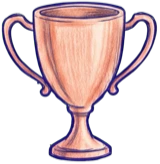

Every score here was replayed on the game's own rules before it counts.
Scores are checked about every 20 minutes, so a new one can take a while to show up. Only initials are kept, no accounts. Something wrong? Write it up on the detention slip behind her sneaker in the game's locker.